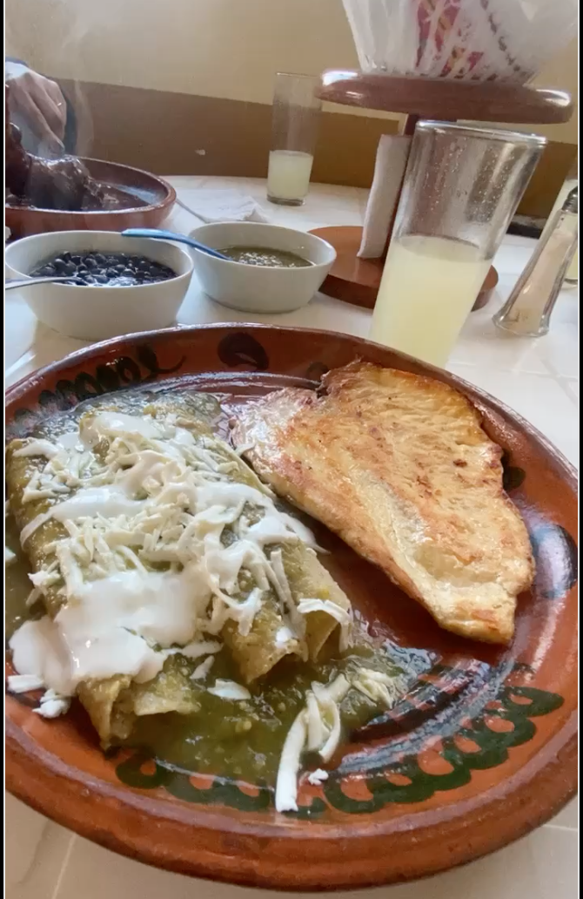
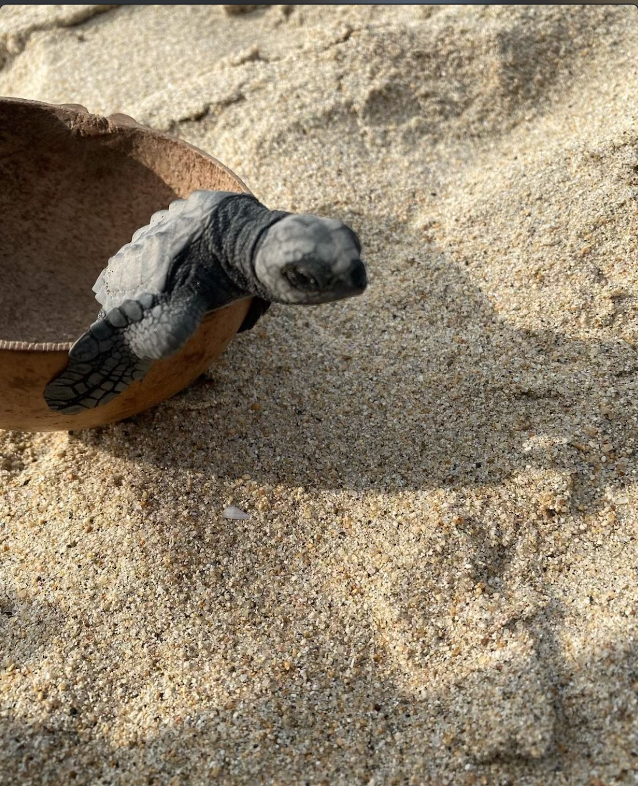

Best Places to Visit
- Zicatela Beach
- Carrizalillo Beach
- Bacocho Beach
- Laguna de Manialtepec
Best Restaurants
- La Olita
- El Espadin Verde
- Almoraduz
- Ristorante & Pizzeria La Palapa
Activites
- Dolphin cruise
- Snorkaling
- Release Sea Turles in Playa Bacocho
Local Cuisine
- Don't miss the opportunity to try the local Oaxacan cuisine, including delicious mole, tlayudas, and mezcal.